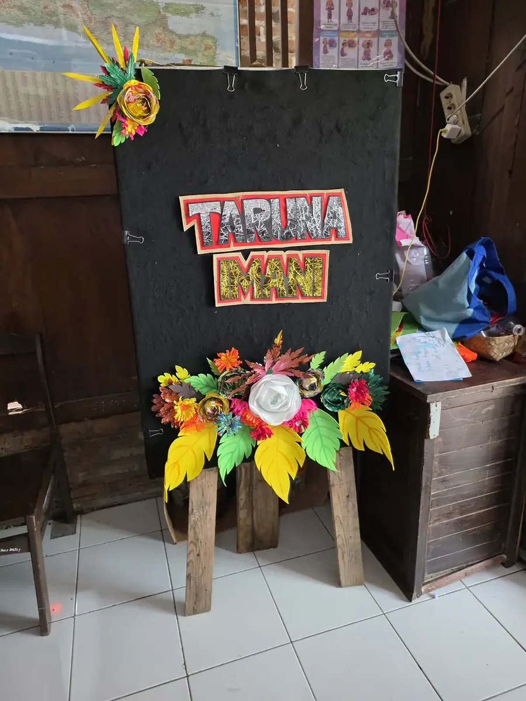

Jawaban singkat: GPK adalah guru pembimbing khusus (sering juga disebut guru pendamping khusus), yaitu guru dengan kompetensi khusus yang mendukung peserta didik berkebutuhan khusus dan guru-guru lain di sekolah penyelenggara pendidikan inklusif. Sejak Permendikbudristek Nomor 48 Tahun 2023, istilah nasionalnya guru pendidikan khusus. Guru ini ditugaskan di Unit Layanan Disabilitas, memberi layanan pembelajaran dan membimbing guru lain, serta boleh bertugas di lebih dari satu sekolah. Di Daerah Istimewa Yogyakarta, Peraturan Gubernur DIY Nomor 21 Tahun 2013 masih berlaku dan tetap memakai istilah guru pembimbing khusus. GPK berbeda dengan shadow teacher, yaitu pendamping individual untuk satu anak.
Pembaruan penting soal dasar hukum
Banyak tulisan tentang GPK, termasuk versi lama artikel ini, mengutip Permendiknas Nomor 70 Tahun 2009 sebagai dasar hukum. Saat kami cek di JDIH BPK pada 11 Oktober 2026, ketentuan peraturan itu tentang peserta didik yang memiliki kelainan sudah dicabut dan dinyatakan tidak berlaku oleh Permendikbudristek 48/2023 (Pasal 43 huruf a), yang ditetapkan 4 Agustus 2023 dan diundangkan 8 Agustus 2023. Bagian itulah yang dulu menjadi dasar GPK. Artikel ini sudah kami perbarui mengikuti aturan yang berlaku.
Daftar Isi
Apa itu GPK
Peraturan Gubernur DIY Nomor 21 Tahun 2013 Pasal 1 angka 3 mendefinisikan guru pembimbing khusus sebagai tenaga pendidik yang memiliki kompetensi dalam memberikan pendampingan bagi warga sekolah dan orang tua untuk kelancaran penyelenggaraan pendidikan inklusif di satuan pendidikan. Definisi ini menunjukkan satu hal yang sering terlewat: GPK tidak hanya bekerja dengan anak, tetapi juga dengan guru kelas, sekolah, dan orang tua.
Di tingkat nasional, Permendikbudristek Nomor 48 Tahun 2023 membagi pendidik bagi peserta didik penyandang disabilitas menjadi dua (Pasal 8 ayat 1): guru kelas atau guru mata pelajaran, dan guru pendidikan khusus. Guru pendidikan khusus adalah guru yang memiliki kompetensi khusus dalam memberikan layanan bagi peserta didik penyandang disabilitas (Pasal 9 ayat 1). Peran inilah yang di banyak sekolah dikenal dengan sebutan GPK.
Pembagian ini penting untuk dipahami orang tua. Guru kelas tetap bertanggung jawab mengajar semua siswa, termasuk anak berkebutuhan khusus. Permendikbudristek 48/2023 Pasal 8 ayat (2) bahkan menyebut guru kelas memperoleh kompetensi pendidikan inklusif lewat mata kuliah pendidikan inklusif di program sarjana kependidikan atau pendidikan profesi guru. GPK membantu agar pembelajaran itu bisa diakses anak, bukan mengambil alih seluruh tanggung jawab atas anak.

Dasar hukum GPK yang berlaku
Berikut peraturan yang relevan beserta statusnya di JDIH BPK per 11 Oktober 2026.
| Peraturan | Status | Isi yang berkaitan dengan GPK |
|---|---|---|
| UU Nomor 8 Tahun 2016 | Berlaku | Pasal 10: hak penyandang disabilitas atas pendidikan bermutu secara inklusif dan khusus, serta hak mendapatkan akomodasi yang layak sebagai peserta didik. |
| PP Nomor 13 Tahun 2020 | Berlaku | Mengatur bentuk akomodasi yang layak per ragam disabilitas dan pembentukan Unit Layanan Disabilitas. Contohnya Pasal 15 menyebut pendampingan di kelas oleh juru bahasa isyarat atau juru catat bagi peserta didik dengan disabilitas rungu atau wicara. PP ini tidak menyebut istilah GPK. |
| Permendikbudristek Nomor 48 Tahun 2023 | Berlaku | Pasal 8 sampai 10 mengatur guru pendidikan khusus: kompetensi, penugasan di Unit Layanan Disabilitas, tugas, dan kemungkinan bertugas di lebih dari satu sekolah. Pasal 42 memberi waktu paling lama tiga tahun bagi pemerintah daerah untuk mengalihkan guru pendidikan khusus yang masih bertugas di satuan pendidikan. |
| Permendiknas Nomor 70 Tahun 2009 tentang Pendidikan Inklusif | Dicabut untuk ketentuan tentang peserta didik yang memiliki kelainan | Permendikbudristek 48/2023 Pasal 43 huruf a mencabut ketentuan mengenai peserta didik yang memiliki kelainan dalam peraturan ini. Jangan dipakai lagi sebagai rujukan GPK. |
| Peraturan Gubernur DIY Nomor 21 Tahun 2013 | Berlaku | Pasal 1 angka 3 mendefinisikan guru pembimbing khusus. Pasal 2 huruf b mewajibkan pemerintah kabupaten/kota menjamin tersedianya tenaga pendidik termasuk guru pembimbing khusus. Pasal 3 ayat (1) mewajibkan setiap satuan pendidikan menerima peserta didik berkebutuhan khusus. |
Apa yang berubah sejak 2023
Perubahan terbesar ada pada tempat penugasan. Permendikbudristek 48/2023 Pasal 10 ayat (1) menyebut guru pendidikan khusus ditugaskan pada Unit Layanan Disabilitas sebagai satuan administrasi pangkal, dan ayat (3) membolehkannya melaksanakan tugas pada lebih dari satu satuan pendidikan. Pasal 42 meminta pemerintah daerah mengalihkan guru pendidikan khusus yang masih bertugas di satuan pendidikan paling lama tiga tahun sejak peraturan berlaku. Karena peraturan ini diundangkan 8 Agustus 2023, cara GPK ditempatkan di sekolah negeri bisa sedang berubah. Orang tua sebaiknya menanyakan langsung ke sekolah bagaimana layanan guru pendidikan khusus diatur di sana.
Yang tidak berubah adalah prinsipnya: penyediaan akomodasi yang layak menjadi tanggung jawab pemerintah daerah, penyelenggara sekolah yang didirikan masyarakat, dan sekolah itu sendiri (Permendikbudristek 48/2023 Pasal 3). Penyiapan dan penyediaan pendidik termasuk dalam bentuk fasilitasinya (Pasal 5 ayat 1 huruf c).
Konteks Daerah Istimewa Yogyakarta
Pergub DIY 21/2013 dibuat untuk memperjelas pelaksanaan pendidikan inklusif di DIY dan masih berstatus berlaku di JDIH BPK. Selain kewajiban menjamin guru pembimbing khusus, Pasal 4 membolehkan pemerintah kabupaten/kota membentuk Pusat Sumber Pendidikan Inklusif, dan Pasal 6 mengamanatkan pengaturan lebih lanjut lewat peraturan bupati atau wali kota. Pergub ini disusun ketika Permendiknas 70/2009 masih berlaku, jadi ketika membaca keduanya, utamakan aturan nasional terbaru untuk hal yang diatur berbeda.

Tugas GPK di sekolah inklusi
Permendikbudristek 48/2023 Pasal 10 ayat (2) merumuskan tugas guru pendidikan khusus secara ringkas: memberikan layanan pembelajaran bagi peserta didik penyandang disabilitas, dan/atau membimbing atau mendampingi guru lainnya dalam memberikan layanan itu. Dalam praktik sehari-hari, rumusan itu biasanya mencakup kegiatan berikut. Daftar ini juga sejalan dengan kegiatan minimal dalam magang guru pendidikan khusus yang disebut Pasal 9 ayat (7): identifikasi dan asesmen, diskusi dengan orang tua, penyusunan rencana pembelajaran individual, proses pengajaran, serta evaluasi.
1. Identifikasi dan asesmen
GPK membantu mengenali hambatan belajar peserta didik melalui observasi, wawancara dengan orang tua, dan data dari guru kelas. Hasilnya menjadi dasar menentukan dukungan yang dibutuhkan. Penjelasan tentang asesmen ada di asesmen akademik anak berkebutuhan khusus.
2. Menyusun program pembelajaran individual
Berdasarkan asesmen, GPK bersama guru kelas dan orang tua menyusun program pembelajaran individual (PPI) yang memuat tujuan, strategi, penyesuaian materi, dan cara mengukur kemajuan. PPI adalah dokumen yang terus diperbarui mengikuti perkembangan anak.
3. Membimbing dan mendampingi guru kelas
GPK memberi masukan kepada guru kelas tentang cara menyesuaikan instruksi, tugas, dan penilaian. Model kerja samanya bisa berupa mengajar bersama seperti dibahas di co-teaching dalam kelas inklusi, atau konsultasi rutin. Panduan Pelaksanaan Pendidikan Inklusif 2021 juga menyebut guru pembimbing khusus dapat menyumbangkan informasi tentang cara memodifikasi kurikulum dan bantuan tambahan yang dibutuhkan peserta didik.
4. Memberi layanan pembelajaran langsung
Untuk kebutuhan tertentu, GPK memberi layanan langsung kepada peserta didik, di dalam kelas atau di ruang sumber. Karena satu GPK bisa melayani banyak anak dan lebih dari satu sekolah, layanan langsung ini biasanya terjadwal, berbeda dengan shadow teacher yang mendampingi satu anak sepanjang jam yang disepakati.
5. Berkomunikasi dengan orang tua
GPK menyampaikan perkembangan anak, membahas kesulitan, dan memberi saran latihan di rumah. Kerja sama ini dibahas lebih jauh di peran orang tua dalam pendidikan inklusi.
6. Evaluasi dan pelaporan
GPK mengevaluasi kemajuan peserta didik dan efektivitas program secara berkala, lalu memperbarui PPI dan strategi pembelajaran bersama guru kelas.

Kualifikasi dan kompetensi GPK
Permendikbudristek 48/2023 Pasal 9 mengatur dari mana kompetensi khusus guru pendidikan khusus diperoleh:
- Pendidikan: program sarjana pendidikan khusus atau pendidikan luar biasa, program pendidikan profesi guru untuk pendidikan khusus, atau tambahan masa studi pendidikan profesi guru untuk praktik magang di satuan pendidikan (ayat 3).
- Pelatihan: pelatihan untuk meningkatkan kemampuan memodifikasi dan menyesuaikan kurikulum, dan/atau pelatihan keterampilan berkomunikasi dengan peserta didik penyandang disabilitas (ayat 4), dilengkapi praktik magang (ayat 5) dan diselenggarakan oleh Kementerian atau lembaga pelatihan yang ditetapkan Kementerian (ayat 9).
Magang dilaksanakan di satuan pendidikan yang memiliki peserta didik penyandang disabilitas, dengan guru pendamping magang yang berasal dari guru pendidikan khusus atau praktisi profesional di bidang pendidikan khusus (ayat 6 dan 8). Guru kelas atau guru mata pelajaran yang lulus pendidikan atau pelatihan itu berhak memperoleh sertifikat kelulusan (ayat 10).
Di luar syarat formal, GPK membutuhkan kemampuan asesmen, penyusunan PPI, penguasaan strategi pembelajaran yang dapat disesuaikan, serta keterampilan berkomunikasi dengan guru dan orang tua. Kemampuan membimbing sesama guru sama pentingnya dengan kemampuan mengajar anak, karena itu memang bagian dari tugasnya menurut Pasal 10.
GPK dan shadow teacher
GPK dan shadow teacher sering tertukar. Ringkasnya, GPK atau guru pendidikan khusus adalah bagian dari layanan pendidikan resmi yang melayani banyak anak dan membimbing guru, sedangkan shadow teacher mendampingi satu anak di kelas dan tidak diatur khusus dalam peraturan. Perbandingan lengkapnya, termasuk tugas harian shadow teacher, status hukumnya, dan kapan seorang anak mungkin membutuhkannya, kami bahas di artikel utama shadow teacher adalah: peran, tugas, syarat, dan bedanya dengan GPK. Bila Anda sedang mempertimbangkan pendamping pribadi untuk anak, baca juga cara memilih shadow teacher.
Keduanya bisa bekerja bersama. GPK membantu guru kelas menyesuaikan pembelajaran dan menyusun PPI, sementara shadow teacher menerapkan strategi itu setiap hari di samping anak. Agar tidak saling tumpang tindih, sepakati siapa melakukan apa dalam pertemuan bersama orang tua.
Tantangan di lapangan
Kami tidak menemukan data nasional terbaru yang bisa diperiksa tentang jumlah GPK dibandingkan jumlah sekolah inklusi, jadi kami tidak mencantumkan angka. Tantangan berikut kami tulis dari kerangka aturan dan pengalaman umum penyelenggaraan pendidikan inklusif:
- Peralihan penugasan. Aturan 2023 memindahkan pangkal penugasan guru pendidikan khusus ke Unit Layanan Disabilitas, dengan masa peralihan tiga tahun. Selama peralihan, pembagian tugas di tiap daerah bisa berbeda.
- Satu guru untuk banyak anak. Karena guru pendidikan khusus boleh bertugas di lebih dari satu sekolah, waktunya untuk tiap anak terbatas. Peran guru kelas dan dukungan teman sebaya menjadi makin penting.
- Pemahaman warga sekolah. GPK kadang dianggap satu-satunya penanggung jawab anak berkebutuhan khusus, padahal aturan menempatkan guru kelas sebagai pendidik utama dan GPK sebagai pendukung.
- Sarana dan media. Media pembelajaran yang dapat disesuaikan dan alat bantu belum tentu tersedia di setiap sekolah, walau sarana dan prasarana termasuk bentuk fasilitasi akomodasi yang layak dalam Permendikbudristek 48/2023 Pasal 5.
- Pengembangan kompetensi. Pelatihan dengan praktik magang yang disyaratkan Pasal 9 membutuhkan waktu dan sekolah tempat magang yang memiliki peserta didik penyandang disabilitas.

Yang bisa dilakukan orang tua
- Tanyakan layanan yang tersedia. Saat mendaftar, tanyakan apakah sekolah memiliki atau bekerja sama dengan guru pendidikan khusus, bagaimana jadwal layanannya, dan bagaimana PPI disusun.
- Bawa data yang lengkap. Hasil asesmen, laporan terapi, dan catatan perkembangan membantu GPK menyusun dukungan yang tepat sejak awal.
- Ikut menyusun dan mengevaluasi PPI. Orang tua paling mengenal anak di rumah, dan informasi itu dibutuhkan agar target belajar realistis.
- Jaga kesinambungan sekolah dan rumah. Strategi yang dipakai di kelas sebaiknya juga dipakai di rumah agar anak tidak bingung.
- Bila memakai shadow teacher, satukan tim. Pastikan GPK, guru kelas, terapis, dan pendamping bertemu dan memakai strategi yang sama.
Di Sekolah Inklusi Taruna Imani yang dikelola YUKA di Sleman, kebutuhan dukungan setiap anak kami bicarakan bersama orang tua. Bila Anda ingin berdiskusi, silakan hubungi kami lewat halaman konsultasi atau halaman kontak.

Pertanyaan yang sering diajukan
Apa kepanjangan GPK?
GPK adalah singkatan dari guru pembimbing khusus. Dalam percakapan sehari-hari sering juga disebut guru pendamping khusus. Istilah guru pembimbing khusus dipakai dalam Pergub DIY 21/2013 dan Panduan Pelaksanaan Pendidikan Inklusif Kemendikbudristek 2021. Peraturan nasional terbaru, Permendikbudristek 48/2023, memakai istilah guru pendidikan khusus.
Apa dasar hukum GPK saat ini?
Di tingkat nasional, Permendikbudristek 48/2023 tentang akomodasi yang layak bagi peserta didik penyandang disabilitas mengatur guru pendidikan khusus di Pasal 8 sampai 10. Pasal 43 huruf a peraturan ini mencabut ketentuan tentang peserta didik yang memiliki kelainan dalam Permendiknas 70/2009, peraturan yang dulu sering dikutip sebagai dasar GPK. Di Daerah Istimewa Yogyakarta, Pergub DIY 21/2013 tentang Penyelenggaraan Pendidikan Inklusif masih berstatus berlaku dan memakai istilah guru pembimbing khusus (dicek di JDIH BPK, 11 Oktober 2026).
Apa tugas GPK di sekolah inklusi?
Menurut Permendikbudristek 48/2023 Pasal 10 ayat (2), guru pendidikan khusus memberikan layanan pembelajaran bagi peserta didik penyandang disabilitas dan/atau membimbing atau mendampingi guru lain dalam memberikan layanan itu. Dalam praktik, ini mencakup identifikasi dan asesmen, penyusunan program pembelajaran individual, konsultasi dengan guru kelas, komunikasi dengan orang tua, serta evaluasi.
Apa perbedaan GPK dan shadow teacher?
GPK atau guru pendidikan khusus adalah guru dalam layanan pendidikan resmi yang melayani peserta didik penyandang disabilitas dan membimbing guru lain, serta boleh bertugas di lebih dari satu sekolah. Shadow teacher adalah pendamping individual untuk satu anak di kelas, tidak diatur khusus dalam peraturan, dan biasanya hadir atas kesepakatan orang tua dengan sekolah.
Apa syarat menjadi GPK?
Permendikbudristek 48/2023 Pasal 9 menyebut kompetensi khusus guru pendidikan khusus diperoleh melalui pendidikan (program sarjana pendidikan khusus atau pendidikan luar biasa, pendidikan profesi guru untuk pendidikan khusus, atau tambahan masa studi PPG untuk praktik magang) atau pelatihan memodifikasi kurikulum dan berkomunikasi dengan peserta didik penyandang disabilitas yang dilengkapi praktik magang.
Apakah setiap sekolah wajib punya GPK?
Aturan nasional yang berlaku tidak lagi merumuskannya sebagai satu GPK per sekolah. Permendikbudristek 48/2023 menempatkan guru pendidikan khusus di Unit Layanan Disabilitas dan membolehkan satu guru bertugas di lebih dari satu sekolah. Di DIY, Pergub 21/2013 Pasal 2 mewajibkan pemerintah kabupaten/kota menjamin tersedianya tenaga pendidik termasuk guru pembimbing khusus. Tanyakan langsung ke sekolah bagaimana layanan itu diatur di tempat anak Anda.
Apa itu Unit Layanan Disabilitas?
PP 13/2020 dan Permendikbudristek 48/2023 mendefinisikan Unit Layanan Disabilitas sebagai bagian dari satu institusi atau lembaga yang berfungsi sebagai penyedia layanan dan fasilitas untuk penyandang disabilitas. Menurut Permendikbudristek 48/2023 Pasal 10 ayat (1), guru pendidikan khusus ditugaskan di unit ini sebagai satuan administrasi pangkal.
Bagaimana orang tua bisa bekerja sama dengan GPK?
Bagikan hasil asesmen dan informasi penting tentang anak, ikut menyusun dan mengevaluasi program pembelajaran individual, jaga agar latihan di sekolah berlanjut di rumah, dan hadiri pertemuan evaluasi. Kalau anak juga didampingi shadow teacher, pastikan GPK, guru kelas, dan pendamping memakai strategi yang sama.
Tentang artikel ini
- Ditulis oleh: Tim YUKA (Yayasan Ukhuwah Kaffah Amanatullah), pengelola Sekolah Inklusi Taruna Imani, Sleman, Yogyakarta.
- Dasar rujukan: teks peraturan dari JDIH BPK (peraturan.bpk.go.id) yang statusnya dicek pada 11 Oktober 2026, dan Panduan Pelaksanaan Pendidikan Inklusif terbitan Kemendikbudristek tahun 2021. Semua rujukan ditautkan di bagian sumber.
- Terbit: 5 Mei 2026. Pembaruan terakhir: 11 Oktober 2026.
- Catatan koreksi (11 Oktober 2026): versi lama artikel ini mengutip Permendiknas 70/2009 seolah masih berlaku dan menyebut PP 13/2020 mengatur GPK. Keduanya sudah kami koreksi: ketentuan Permendiknas 70/2009 tentang peserta didik yang memiliki kelainan dicabut oleh Permendikbudristek 48/2023, dan PP 13/2020 tidak memuat istilah GPK. Klaim data jumlah GPK, rasio GPK per anak, kutipan, dan cerita lapangan yang tidak dapat kami verifikasi sudah kami hapus, dan foto yang memperlihatkan wajah anak diganti dengan dokumentasi tanpa wajah.
- Status tinjauan: artikel ini disusun oleh tim pendidik YUKA dan belum ditinjau oleh pakar pendidikan khusus atau ahli hukum pendidikan di luar tim. Status ini akan kami perbarui di halaman ini bila tinjauan tersebut sudah dilakukan. Alur tinjauan dan koreksi dijelaskan di Kebijakan Editorial YUKA.
- Kebijakan koreksi: jika Anda menemukan pasal yang keliru, aturan yang sudah berubah, atau sumber yang tidak cocok, beri tahu kami lewat halaman kontak. Kami memperbaiki isinya dan mencantumkan catatan koreksi secara terbuka.
Bacaan Terkait
Sumber dan Referensi
- Permendikbudristek Nomor 48 Tahun 2023 tentang Akomodasi yang Layak untuk Peserta Didik Penyandang Disabilitas pada PAUD Formal, Pendidikan Dasar, Pendidikan Menengah, dan Pendidikan Tinggi (JDIH BPK, status berlaku; Pasal 43 huruf a mencabut ketentuan Permendiknas 70/2009 tentang peserta didik yang memiliki kelainan)
- Peraturan Pemerintah Nomor 13 Tahun 2020 tentang Akomodasi yang Layak untuk Peserta Didik Penyandang Disabilitas (JDIH BPK, status berlaku)
- Peraturan Gubernur DIY Nomor 21 Tahun 2013 tentang Penyelenggaraan Pendidikan Inklusif (JDIH BPK, status berlaku)
- Undang-Undang Nomor 8 Tahun 2016 tentang Penyandang Disabilitas (JDIH BPK, status berlaku)
- Kemendikbudristek, Pusat Kurikulum dan Perbukuan (2021): Panduan Pelaksanaan Pendidikan Inklusif (PDF)
Catatan: Artikel ini bersifat edukasi umum dan bukan pengganti konsultasi dengan psikolog, tenaga kesehatan, atau petugas layanan sosial resmi. Status semua peraturan dicek di JDIH BPK (peraturan.bpk.go.id) pada 11 Oktober 2026. Artikel ini tidak mencantumkan angka gaji atau tarif pendampingan karena kami tidak menemukan data resmi yang bisa diperiksa pembaca.